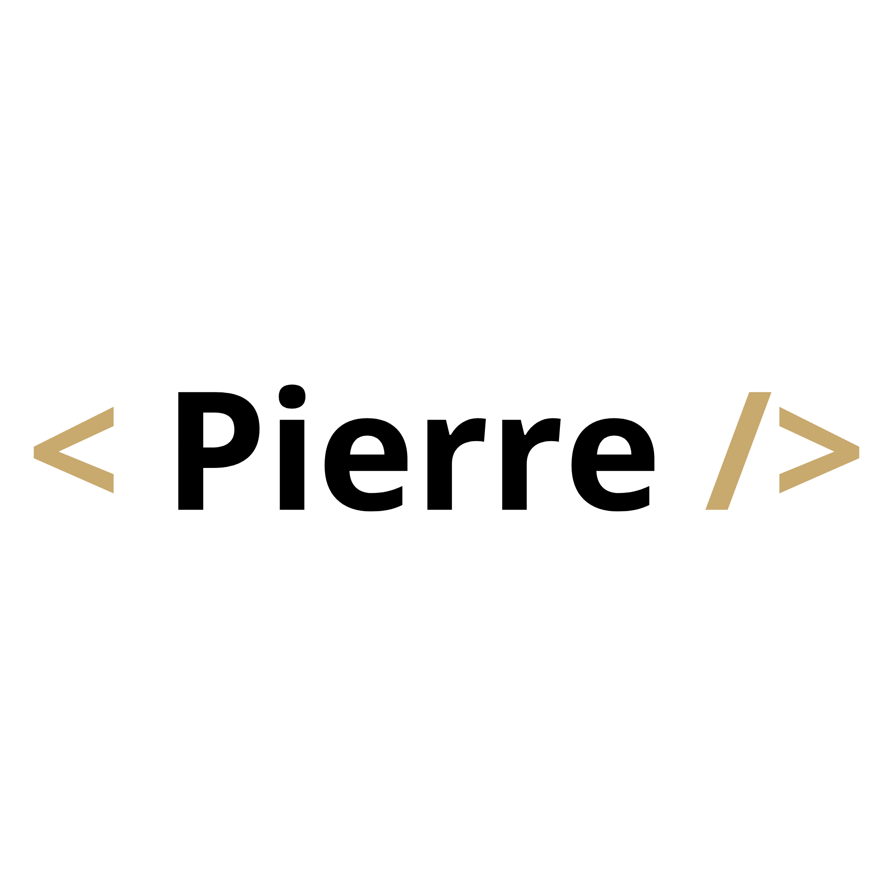

Projet 01
Texte provisoire : deux ou trois lignes de description, juste de quoi occuper la place et montrer comment la carte se comporte.
Voir le projet
Pierre Dunand-ChatelletDéveloppeur web & Créateur digital
Salut, moi c'est Pierre. Je code depuis mes 13 ans, un peu par curiosité, beaucoup par obstination. Ce site regroupe les trucs que j'ai bricolés — sites, jeux, essais ratés transformés en réussites.
Voir mes projetsRéalisations
Texte provisoire : deux ou trois lignes de description, juste de quoi occuper la place et montrer comment la carte se comporte.
Voir le projetTexte provisoire. Le contenu réel de ce portfolio a été retiré, seule la mise en page est conservée.
Voir le projetTexte provisoire servant à caler la hauteur des cartes et l'alignement de la grille sur plusieurs colonnes.
Voir le projetTexte provisoire : description courte d'un projet fictif, pour juger de la typographie et des espacements.
Voir le projetExplorer l'ensemble de mes réalisations en développement web, Python et design.
Voir tous les projetsÀ propos
Je suis lycéen à Ugine, en Savoie, et je vis à Doussard. Ce sont les jeux vidéo qui m'ont donné envie de comprendre comment c'est fait derrière : j'ai commencé le HTML/CSS tout seul avec des tutos YouTube, puis je me suis mis au Python pour faire des petits jeux comme Nim. Je passe pas mal de temps à retravailler mes designs jusqu'à ce qu'ils me plaisent vraiment, quitte à tout recommencer plusieurs fois.
Contact
Archive du portfolio 2024–2026. Les projets affichés sont des exemples : textes provisoires et vignettes remplacées par des blocs gris.